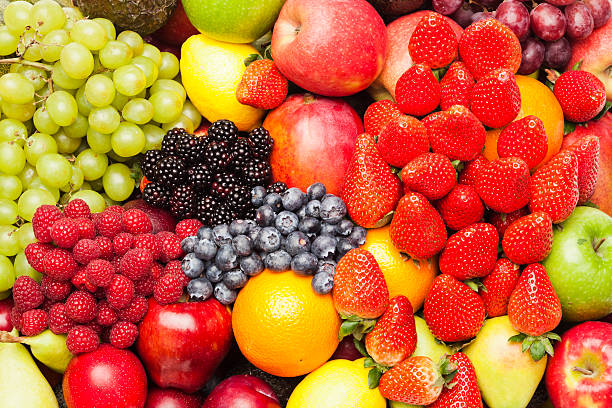

ORGANIC
FRESH FOOD
OrganicFoundation for Organic Agriculture Tanzania
We are Foundation For Organic Agriculture for organic
farming and sustainable development.
HOW It Work
The question form needs the verb “do.” This is because we are basically asking how a certain item does something.
We use “do” to describe the accomplishment of action,and we use “does”to refer to by someone or something else.
It just doesn’t form a question on its own.
ORGANIC FARNING
Organic farming can be defined as an agricultural process that uses fertilisers and pest control waste.
Animal husbandry
Animal husbandry is the agriculture concerned with animals that are raised for meat.
Apable Farning
Apple Farming: Best Business Plan For
Last Updated: February 16, 2023 / By Staff
Commercial apple farming is a
very old business.

ORGANIC FARM
Our Promise
Find Out More, Visit Our Website And Read On.
Our Charity's International Projects Are Keeping
Gorillas Safe From Poaching/Habitat Loss.
Volunteering. Lotterry. Fundraising. Conservation. Services: Charity Shop.
About our Farm
VEGETABLES
This is a longer card with supporting text.
HOW IT WORK
This is a longer card with supporting text.
FLEXIBILITY
This is a longer card with supporting text.

FARM PRODECTS
This is a longer card with supporting text.